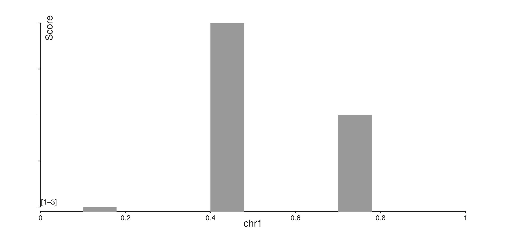
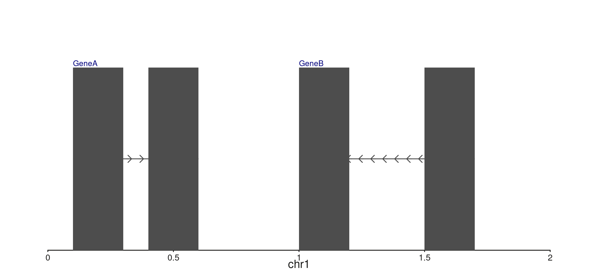
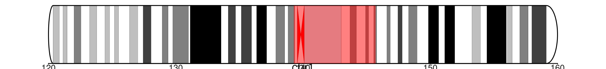
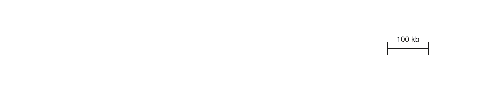

Batch 9: In-panel axes, seq_reads, seq_scalebar, and file connections
Source:vignettes/batch-9-features.Rmd
batch-9-features.RmdBatch 9 introduces six independent feature groups: in-panel axis
title / range labels, composable seq_gene label placement,
ideogram scope and style options, seq_reads() for IGV-style
alignment views, seq_scalebar() for axis-free length
references, and a small family of on-demand file connection helpers
(open_bigwig(), open_bam(),
open_hic()).
In-panel axis titles and range labels
The default behaviour of axes has not changed — titles render in the
margin band and per-tick labels stack along the axis. Two new theme keys
let you override this on a per-axis basis:
axis.<dim>.title.position and
axis.<dim>.labels.style / .position.
win <- GRanges("chr1", IRanges(1, 1000))
gr <- GRanges("chr1", IRanges(c(100, 400, 700), width = 80),
score = c(1, 3, 2))
p <- seq_plot() %+%
(seq_track(
data = gr, windows = win,
aesthetics = aes(
"axis.y.title.text" = "Score",
"axis.y.title.position" = c(0.02, 0.95),
"axis.y.labels.style" = "range",
"axis.y.labels.position" = c(0.02, 0.05)
)
) %+%
seq_bar(map(x = start, y = score)))
p$plot()
The y-axis here lives entirely inside the panel — the title sits at
NPC (0.02, 0.95) (top-left), and a single bracketed range
label [lo–hi] sits in the bottom-left corner instead of the
per-tick labels.
Composable seq_gene label placement
seq_gene previously placed labels strand-aware to one
side of each gene. The new gene.label aes lets you compose
label x/y placement independently using
c("start"|"end", "top"|"bottom").
gr_genes <- GRanges("chr1",
IRanges(start = c(100, 400, 1000, 1500),
end = c(300, 600, 1200, 1700)),
gene_id = c("geneA", "geneA", "geneB", "geneB"),
gene_name = c("GeneA", "GeneA", "GeneB", "GeneB"),
strand_col = c("+", "+", "-", "-"),
feat_type = c("exon", "exon", "exon", "exon")
)
win_g <- GRanges("chr1", IRanges(1, 2000))
p <- seq_plot() %+%
(seq_track(data = gr_genes, windows = win_g) %+%
seq_gene(
map(group = gene_id, label = gene_name,
strand = strand_col, type = feat_type),
aesthetics = aes(
gene.label = aes(position = c("start", "top"),
color = "navy",
size = 0.55)
)
))
p$plot()
Ideogram scope and style
seq_ideogram(scope = "full") renders the entire
chromosome — not just the bands overlapping the current window — and
overlays a translucent highlight box marking a sub-range.
style = "rounded" adds rounded caps to the two telomere
ends.
For axis labels that read chromosome coordinates, give the track the
whole chromosome as its windows, then pass
highlight_range to mark the sub-range of interest:
cb <- load_cytobands()
chr1_full <- GRanges("chr1", IRanges(1, 248956422))
zoom_in <- GRanges("chr1", IRanges(1.2e8, 1.6e8))
p <- seq_plot() %+%
seq_track(windows = zoom_in, height = 1.5) %+%
seq_ideogram(cb,
scope = "full",
style = "rounded",
highlight_range = zoom_in,
aesthetics = aes(
highlight = aes(fill = "red", alpha = 0.5),
telomere.radius = 1
))
p$plot()
telomere.radius = 1.0 produces a full half-circle cap
(cap depth = band height / 2 in inches); smaller values give a shallower
curve.
Reference scalebars
seq_scalebar() draws a horizontal length reference at a
user-controlled panel position. Useful when the x-axis is hidden but you
still want to communicate scale.
win_sb <- GRanges("chr1", IRanges(1, 1e6))
p <- seq_plot() %+%
(seq_track(
windows = win_sb,
aesthetics = aes("axis.x1.visible" = FALSE)) %+%
seq_scalebar(length_bp = 1e5,
hjust = 0.95,
vjust = 0.5,
bar_lwd = 1.5))
p$plot()
The label auto-formats from the bp length: 1e5 →
"100 kb", 2e6 → "2 Mb",
500 → "500 bp". Override with
label = "...".
File connection helpers
open_bigwig(), open_bam(), and
open_hic() return lightweight S3 connection objects. Each
probes the file header at construction (a few hundred bytes of I/O),
records the per-format max_fetch_bp guardrail, and exposes
a $fetch(region) method that pulls only the requested
genomic span on demand.
bw <- open_bigwig("path/to/signal.bw")
bw # <SeqBigWig> ... max_fetch_bp: 50,000,000
sig <- bw$fetch(GRanges("chr1", IRanges(1, 1e6))) # GRanges of signal
bam <- open_bam("path/to/aln.bam")
bam$fetch(GRanges("chr1", IRanges(20363000, 20370000)))
hic <- open_hic("path/to/contacts.hic", resolution = 25000)
hic$fetch(GRanges("chr1", IRanges(1e7, 1.1e7)))The guardrail fires before I/O — asking for a span wider
than max_fetch_bp raises an informative error rather than
silently loading an entire chromosome.
is_seq_file_conn(list()) # FALSE
#> [1] FALSE
is_seq_file_conn("path/to/file.bw") # FALSE
#> [1] FALSEseq_reads() — IGV-style alignment view
seq_reads() loads alignments from an indexed BAM at
construction time, packs them into rows by insert length (or start), and
renders chevron polygons (right-pointing for + strand, left
for −). Mate pairs are linked by a thin horizontal line by
default.
win <- GRanges("chr1", IRanges(20363000, 20370000))
reads <- seq_reads("path/to/aln.bam", win,
sort_by = "insert_length",
link_mates = TRUE)
seq_plot() %+%
(seq_track(windows = win, height = 4) %+% reads)Each read becomes one chevron; mate pairs share a single packed row
and are connected by their outer extent. The max_width
guardrail (default 100 kb) fires before any BAM I/O when a window is too
wide.
When a sample BAM is available, the same call renders an IGV-style row- packed view of the underlying alignments: